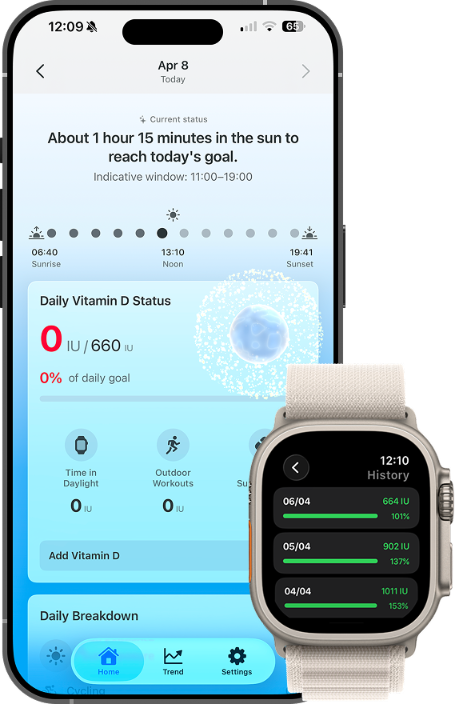
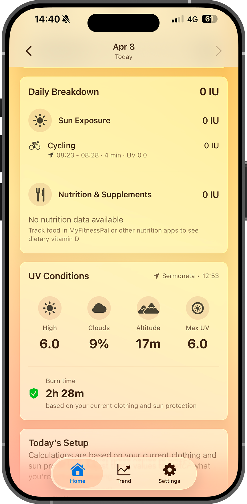
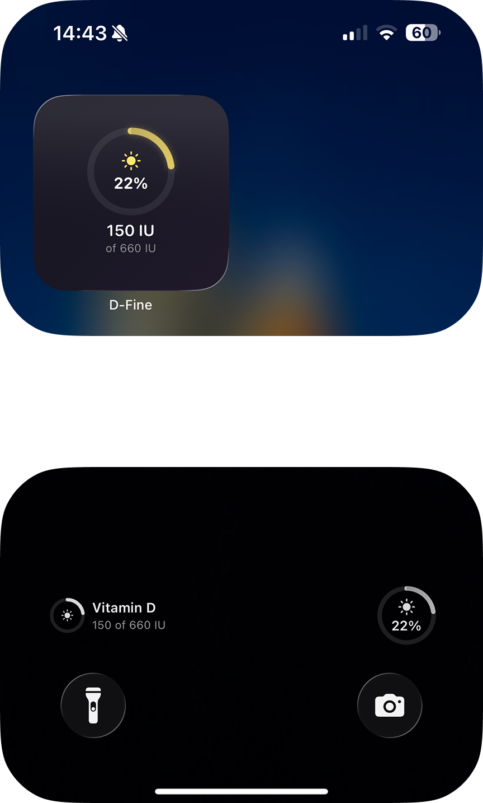

Know exactly how much vitamin D you're getting. Every day.
D-Fine tracks your vitamin D from sunlight, food, and supplements — and tells you if it's enough, based on your skin, your location, and the time of day.

The problem
Most people don't know they're not getting enough.
Vitamin D deficiency is one of the most common in the world — even among people who spend time outdoors. The issue isn't laziness. It's that no one can tell how much sun they actually need. It depends on where you live, what time it is, your skin type, what you're wearing. You can't figure that out by feel.

The solution
Sun. Food. Supplements.
One clear number.
Vitamin D comes from three places, but until now there was no way to see them together. D-Fine combines all three into a single daily figure — your IU today versus your personalized daily target. If you're taking a supplement, you'll finally know whether it's the right dose for you, today, in this season.
How it works
You wear your Watch.
D-Fine does the rest.
Apple Watch passively measures your Time in Daylight — the minutes your skin is actually exposed to sunlight. D-Fine also reads your outdoor workouts from Apple Health, so every run, walk, or ride counts toward your daily synthesis. No manual logging. No guessing.
Even without an Apple Watch, D-Fine works — using your location, UV conditions, and outdoor workout data to estimate your vitamin D. With the Watch, the calculation becomes significantly more precise thanks to continuous daylight measurement.
Calibrated to you
Your skin type, typical clothing, SPF, age, weight, latitude, season — the algorithm accounts for all of it. The same half hour in the sun means very different things for different people. D-Fine knows the difference.
Always up to date
Widgets on your home screen and lock screen. Complications on your Watch face. Background updates even when the app is closed. Your vitamin D status is always where you look.

Why trust it
Built on science.
Designed for privacy.
Science-based
The algorithm is grounded in peer-reviewed research on vitamin D photosynthesis — the same studies used to define international intake guidelines. No black boxes. No buzzwords. Just published science, translated into something you can use.
Your data stays yours
No account. No email. No third-party code in the app. Health data is read-only from Apple Health. Your profile syncs through iCloud — yours, not ours.
Apple native
Built entirely for iPhone and Apple Watch, with zero external dependencies. HealthKit, CloudKit, WidgetKit — no wrappers, no workarounds. D-Fine works the way Apple apps should.